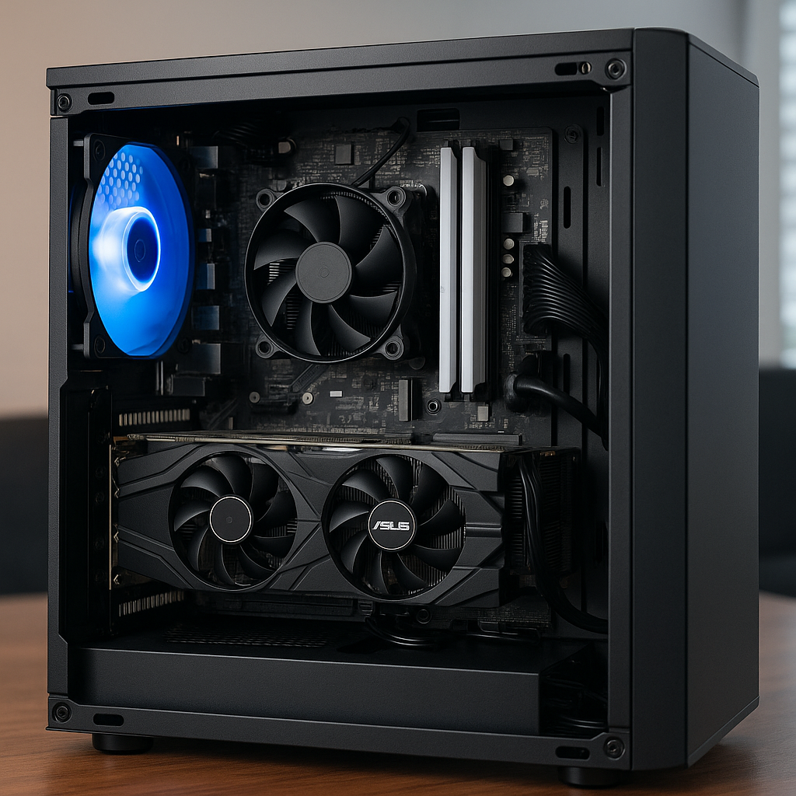

Página 1
Um PC gamer é um computador feito para jogar videogames de forma rápida e com bons gráficos. Ele tem alguns componentes que fazem toda a diferença para uma boa experiência, como:
Componentes Essenciais de um PC Gamer
- Processador (CPU): O cérebro do computador, que ajuda a rodar os jogos sem travar.
- Placa de vídeo (GPU): Responsável pelos gráficos, ela é essencial para ter uma imagem boa e fluída nos jogos.
- Memória RAM: Quanto mais RAM, mais rápido o PC pode rodar vários jogos ou programas ao mesmo tempo.
- Armazenamento: Um SSD é melhor que um HD tradicional porque carrega os jogos mais rápido.
- Placa-mãe: Conecta todos os componentes e deve ser compatível com os outros itens.
Dicas Adicionais
Além disso, é importante ter um sistema de resfriamento para evitar que o PC esquente demais durante os jogos. Outros acessórios, como monitor, teclado, mouse e fones de ouvido, também são essenciais para melhorar a experiência.
Montar um PC gamer pode ser mais caro, mas vale a pena para quem quer jogar de forma mais fluida e com qualidade visual.